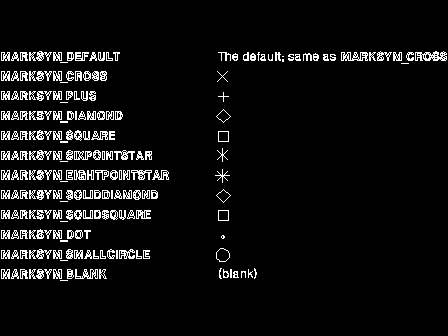

hps (HPS) - input
lSymbol (LONG) - input
The identity of the required marker symbol. Zero selects the default marker symbol, a value in the range 1 through 255 identifies a symbol in the current marker set. Valid values in the default marker set are shown below, these symbols are not necessarily available with other marker sets:
rc (BOOL) - returns
TRUE